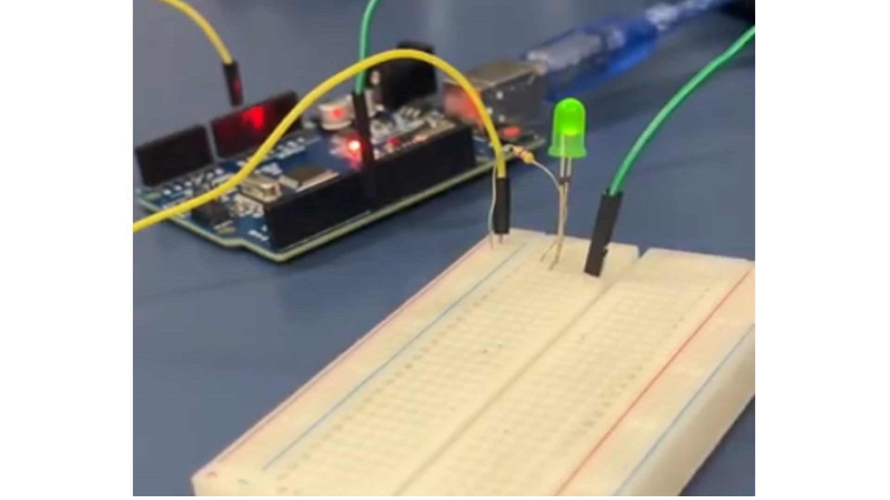
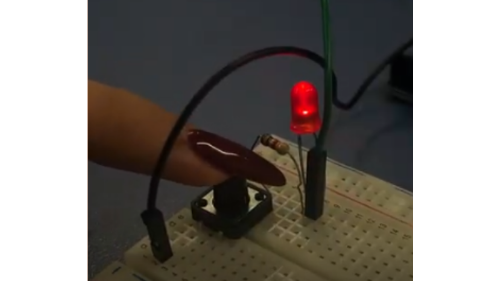
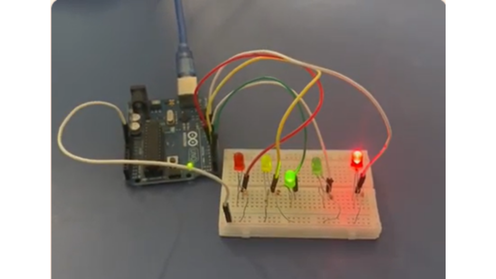

Montamos um circuito com Arduino, tanto de forma online quanto física, utilizando um LED e um resistor. Programamos o Arduino para fazer o LED piscar, alternando entre ligado e desligado. .
Habilidades e Competências: Não informado.

AnexoAprendemos a utilizar um push button com Arduino, simulando um circuito no Tinkercad para controlar um LED e entender como sinais físicos são transformados em comandos digitais .
Habilidades e Competências: Não informado.

AnexoNesta atividade, montamos um semáforo utilizando Arduino UNO, protoboard, LEDs, resistores e jumpers. Programamos os LEDs para acender e apagar em uma sequência, simulando o funcionamento de um semáforo. .
Habilidades e Competências: Não informado.

Anexo